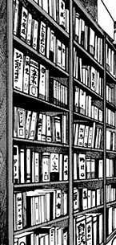

You lower your head, as if admitting defeat and he snickers uncontrollably.
"Yes thats right! Succumb to the great power of your new king, weakling! You've done well so far but you really are like our mother, dear sister. Too pure for this dangerous, dangerous world."
You lift your head again in confusion. What is he saying?
"Let me re-introduce myself. I'm Nicholas's older twin-brother and your half-brother. Born to the 'father' that you've never seen before and your overprotective mother."
Heavily breathing, your eyes glare at him for saying obnoxious things but you don't speak a word.
"Don't believe me, huh? Then tell me. Has mother ever talked to you about 'father'? Or when he was alright, have you ever seen him?"
Pricked with the truth, you retaliate.
"That's because him and mother need time alone to spend with other!"
He snickers, "More than you?"
"Ye-"
"And Nicholas?"
You gulp hard and try to push the memory back but it doesn't work.

It was a long day and as usual, you were cooped up in the library. As usual, forbidden to leave until sundown. Nicholas, who had long left, had visited that morning and even gave you treats to enjoy. You leave the room and follow their voice then decide to just stop there afraid of breaking the rules. But, the door peeked slightly open and you could see inside. They were happy talking with each other and creating potions. Something you've always wanted to do. You crouch down then leave disheartened.
"Don't you want to know who your real 'father' is?" his eyes gleam and his smile opens up his numerous teeth.
"Wh-who i-is i-"
A loud thud to your left doesn't let you finish. The side door opens and beyond the dusty entrance was mother pointing a bow and arrow at the demon. He stood still for a while before finally shouting.
"Mother, you've finally arrived! How did it feel after leaving me all these years?"
She grimices tightly while looking at something in the distance - Nicholas. Has he been here all this time?
To be continued...
There's more choices to select and more truth to be revealed.